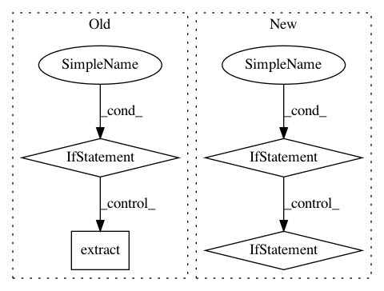

038515ccfb6df094e22b9f14fcf9d8c391bc4eaa,torchtext/utils.py,,extract_archive,#Any#Any#Any#Any#,99
Before Change
for file_ in tar.getnames():
file_path = os.path.join(to_path, file_)
files.append(file_path)
if os.path.isfile(file_path):
if os.path.exists(file_path):
logging.info("{} already extracted.".format(file_path))
if overwrite:
tar.extract(file_, to_path)
else:
tar.extract(file_, to_path)
else:
tar.extract(file_, to_path)
return files
After Change
files = []
for file_ in tar:
file_path = os.path.join(to_path, file_.name)
if file_.isfile():
files.append(file_path)
if os.path.exists(file_path):
logging.info("{} already extracted.".format(file_path))
if not overwrite:
continue
tar.extract(file_, to_path)
return files
In pattern: SUPERPATTERN
Frequency: 3
Non-data size: 4
Instances
Project Name: pytorch/text
Commit Name: 038515ccfb6df094e22b9f14fcf9d8c391bc4eaa
Time: 2019-07-26
Author: cpuhrsch@fb.com
File Name: torchtext/utils.py
Class Name:
Method Name: extract_archive
Project Name: dmlc/gluon-cv
Commit Name: 2716ec90b5be79d67cb39c46f1182b9827fa60bc
Time: 2020-05-03
Author: 42975160+HieronymusLex@users.noreply.github.com
File Name: scripts/datasets/market1501.py
Class Name:
Method Name: main
Project Name: pantsbuild/pants
Commit Name: edcd459b9cf96c3e5ffc8d6965df5f2e731b3b84
Time: 2014-10-30
Author: tinystatemachine@gmail.com
File Name: src/python/pants/cache/restful_artifact_cache.py
Class Name: RESTfulArtifactCache
Method Name: use_cached_files